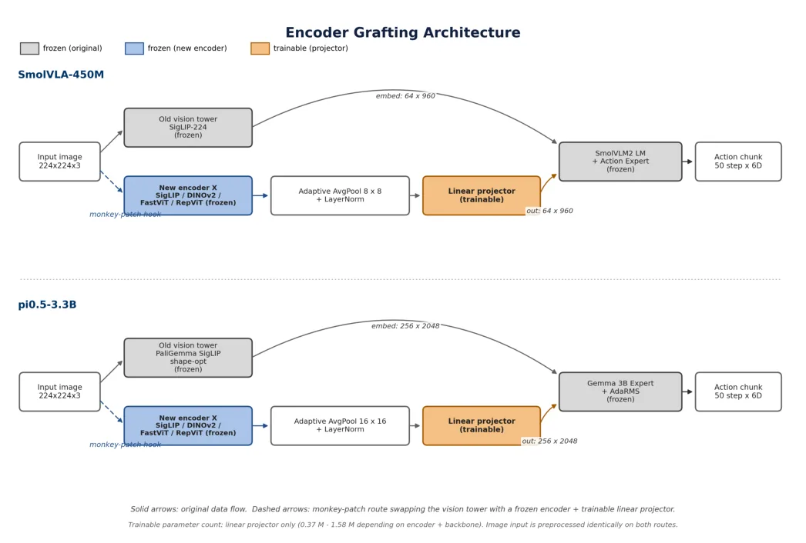
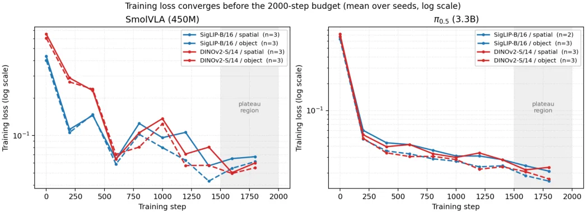
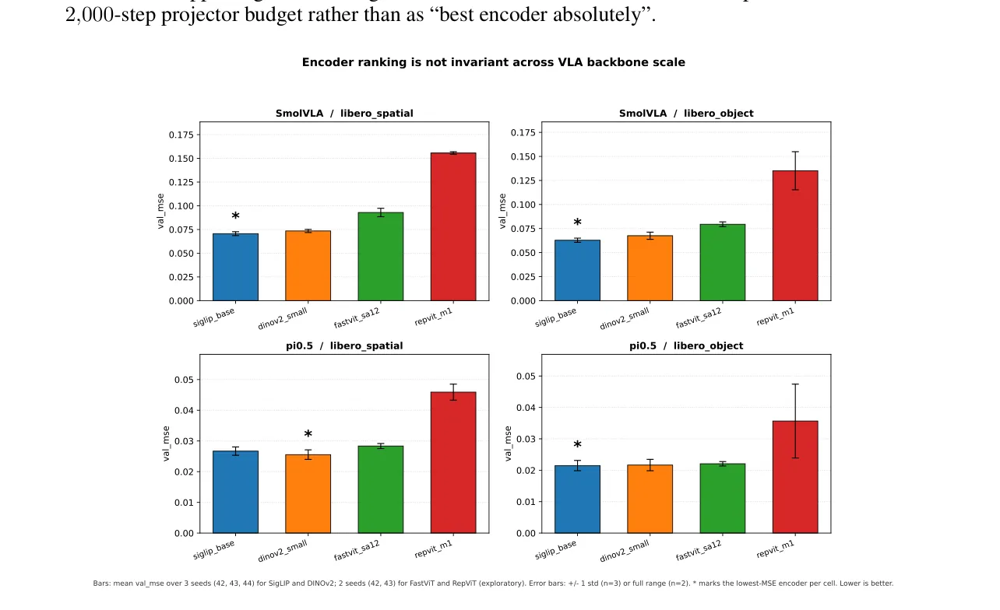
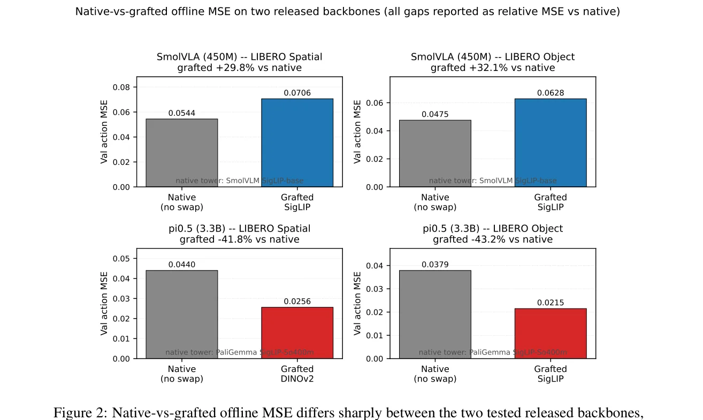
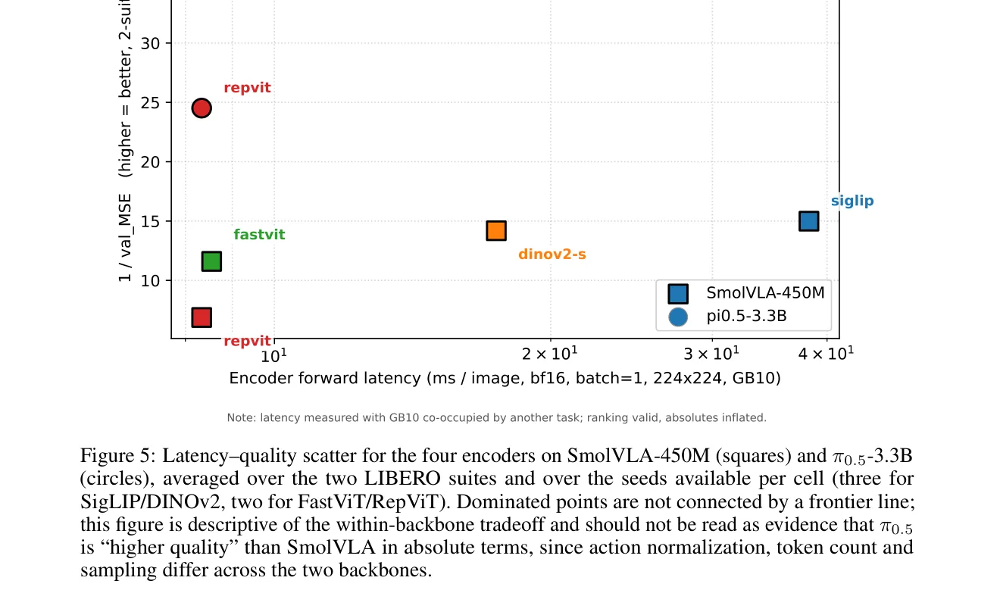

⚡速记层 · 思想 / 逻辑 / 方法
默认读完就走的一层——只讲思想、逻辑、方法；效果只作验证。要核对原文再进下面的「深读层」。
VLA 从 sub-billion（SmolVLA）一路 scale 到几十亿参数（π0.5、OpenVLA），但工程力气都花在语言 backbone、action expert 和数据配比上——vision encoder 几乎是从每个 VLM release 里直接继承、从不做消融（SmolVLA 继承 SmolVLM tower，π0.5 继承 PaliGemma SigLIP，OpenVLA 融合 SigLIP+DINOv2）。已有研究（VLM4VLA、OpenVLA-OFT、Theia）都在小 VLA 上比 encoder，但 encoder 总是和整个 policy 一起 co-train，排名混淆了"encoder 质量"与"backbone-encoder 协同适配"。于是拿到 π0.5 这种大 checkpoint 的工程师，手里没有任何受控证据告诉她小 VLA 的 top-1 encoder 还成不成立。
- 先把问题立成可证伪的一句：小 backbone 上选出的 top-1 encoder，在更大的 released backbone 上还是 top-1 吗？
- 设计受控诊断：固定 grafting 协议（adaptive average pooling+LayerNorm+单层 projector），冻结 LM 与 action expert，只训 projector，隔离 encoder 这一个变量。
- 跑 4 encoder × 2 LIBERO suite × 2 backbone × 2–3 seed = 40 格主网格，全部用 offline action MSE 评分（closed-loop 因本体不匹配归零）。
- 观察排名：SmolVLA 两 suite 都选 SigLIP；π0.5-spatial 翻成 DINOv2-small；π0.5-object 是近似平局。4 个 backbone-suite 里 3 个支持"排名随 backbone 变"；但 Spearman 仍正——因为最差的 encoder（RepViT）恒最差，池底迁移、池顶不迁移。
- 再加 native-through-interface 控制，发现 grafting wrapper 本身就非中性、且两 backbone 符号相反——所以"换 encoder 的增益"有一大块其实是 wrapper 假象，不是 encoder 优劣。
- 结论：encoder 排名不能跨 backbone scale 照搬；部署到新 backbone 前，先跑一遍便宜的 grafting sweep（每格 <6 GPU-小时）来确认或推翻。
224×224 图像 → 候选 encoder（冻结）→ AdaptiveAvgPool + LayerNorm → 单个可训练 linear projector → 冻结的 LM + action expert → action chunk（用 offline MSE 评分）
- ① monkey-patch 单一视觉入口：替换 vision tower，下游 LM/action expert 看到与原模型完全相同的 token 数与 hidden dim（SmolVLA 64×960，π0.5 256×2048），换 encoder 对 policy 代码完全透明。
- ② 只训 projector（0.37–1.58M）：encoder、LM、action expert 全冻结——保证任何 gap 归因于 encoder 本身，而非梯度流过 backbone 的 co-adaptation。
- ③ 只报 offline action MSE：released checkpoint 训练于 SO-100，LIBERO 是 Franka 本体，动作空间不匹配 → closed-loop 成功率≈0，故退而用 episode-split 的 val MSE 作受控诊断。

核心验证：每个 (backbone, suite) 格的 top-1 encoder 列出来，spatial suite 上 top-1 从 SigLIP 翻成 DINOv2——小 backbone 的赢家选不出大 backbone 的赢家。
| Backbone | spatial top-1 | object top-1 | 📍 |
|---|---|---|---|
| SmolVLA-450M | SigLIP 0.0706 | SigLIP 0.0628 | p.8 · Tab.1 |
| π0.5-3.3B | DINOv2 0.0256 | SigLIP 0.0215* | p.8 · Tab.1 |
*π0.5-object 是近似平局带（SigLIP 0.02149 / DINOv2 0.02166 / FastViT 0.02206，相对差 <2.7%），top-1 身份不稳，seed-44 即翻转。跨 backbone Spearman ρ 仍为正（spatial +0.80 / object +1.00），因为最差的 RepViT 恒最差。
- 本文 backbone 之一：π0.5 被当作"大 backbone"做 grafting；其基础是 π0 的 flow-matching VLA。本文不改 π0.5，只换它的 vision tower。
- 质疑的对象：OpenVLA 是"直接继承/融合上游 VLM encoder（SigLIP+DINOv2）"的代表；本文正是质疑这种"照搬 encoder"假设的可迁移性（harness 也设计为可扩展到 OpenVLA）。
- 空间表征呼应：SpatialVLA 主张给 VLA 注入空间视觉表征——与本文"几何向的 DINOv2 在 spatial suite 占优"形成对话（但本文 shuffled-image 控制提示 π0.5-spatial 可能在用低频统计而非真空间结构）。
- 可扩展性视角：X-VLA 用 soft-prompt 做跨本体可扩展适配；与本文互补——一个研究"怎么适配"，一个研究"换 encoder 后排名稳不稳"。视觉 grounding 路线还可参 SG-VLA / Spatially-Conditioned Diffusion Policy。
Track A（移动操作 VLA）中等相关：是 VLA 架构选型的方法论警示——别把别人在小 VLA 上的 encoder 结论照搬到自家大 backbone；frozen-backbone grafting 可作低成本的 target-backbone 诊断（换 encoder 前先 sweep 一遍）。但实验全在 LIBERO 桌面 sim、offline MSE、SO-100/Franka 本体不匹配，非移动/人形真机，落地需自建 embodiment-matched 数据 + 改成 closed-loop。Track B（足式 locomotion/控制）不命中：无 locomotion、WBC、sim2real、状态估计任何内容。
◆核心观点 · 证据
每条 = 分型论点（常驻）+ 解读（常驻）+ 折叠的逐字原文/译文（📍真实页码，Ctrl-F 锚点）。7 观点 · 15 证据。
问题
encoder 选择能否跨 scale 迁移
VLA 普遍直接继承上游 VLM 的 vision encoder、从不消融；但在小 VLA 上验证过的选择，scale 一个数量级后还成立吗？没人做过受控验证，而选错代价不小。
📍 p.1 · Abstract — 查逐字证据
Vision-language-action (VLA) policies typically inherit their vision encoder from upstream VLM releases, but it is unclear whether an encoder choice validated on a small VLA transfers to a larger backbone.
📍 p.1 · §1 Introduction — 查逐字证据
Whether the encoder choice validated on a small VLA backbone remains the right choice once the language and action stack is scaled by an order of magnitude is an open empirical question, and the cost of answering it sloppily is considerable: a wrong encoder pick wastes pretraining compute and pollutes downstream finetune curves.
方法
frozen-backbone grafting 协议
换掉已发布 VLA 的 vision tower，接一个候选 encoder，走固定协议（pool + LayerNorm + 单层线性 projector），冻结 LM 与 action expert，只训 projector——把 encoder 这一个变量从 backbone 协同里隔离出来。
📍 p.1 · Abstract — 查逐字证据
We introduce a frozen-backbone grafting diagnostic: the vision tower of a released VLA is replaced by a candidate encoder under a fixed protocol (adaptive average pooling, LayerNorm, and a single trainable linear projector), with the language model and action expert frozen.
📍 p.2 · §1 Introduction — 查逐字证据
(iii) train only the projector (0.37M–1.58M parameters depending on the encoder output dimension and the target backbone hidden size) for 2,000 steps with batch size 8 (SmolVLA) or effective batch size 8 (π0.5, micro-batch 2 with gradient accumulation

结果与边界
小 backbone 赢家不可靠迁移
SmolVLA 两 suite 都选 SigLIP；π0.5-spatial 翻成 DINOv2-small；π0.5-object 是 seed 敏感的近似平局。4 个 backbone-suite 里 3 个支持"排名随 backbone 变"——小 backbone 的 top-1 选不出大 backbone 的顶档。
📍 p.1 · Abstract — 查逐字证据
the small-backbone winner does not reliably select the large-backbone top tier: SigLIP is best on SmolVLA across both suites, while on π0.5 DINOv2-small leads the spatial suite and the object suite is a seed-sensitive near-tie band
📍 p.1 · Abstract — 查逐字证据
three of the four backbone-suite comparisons (and 11 of 12 seed-level cells) support backbone-dependent rankings
📍 p.10 · §4.9 — 查逐字证据
RepViT-M1 is consistently the worst of the four encoders on both backbones — i.e. the partial bottom-of-pool ordering transfers, while the small-backbone winner does not reliably select the large-backbone top tier.

wrapper 非中性、符号相反
grafting 包装层（pool+LN+projector）本身不是中性的：把 native vision tower 也塞进同一 wrapper，SmolVLA 上 MSE 涨 +45–56%（wrapper 伤），π0.5 上反而降 −50–52%（wrapper 帮）——两 backbone 符号相反。这是个方法论陷阱。
📍 p.1 · Abstract — 查逐字证据
The grafting wrapper is itself non-neutral with opposite sign across backbones (+45–56% MSE on the SmolVLA native tower, −50–52% on π0.5), so all conclusions are conditional on the fixed grafting protocol.
📍 p.14 · §4.13 — 查逐字证据
Routing the native vision tower through the grafting wrapper raises MSE by +55.81% on SmolVLA-spatial and +45.45% on SmolVLA-object (wrapper hurts the native path), but reduces MSE by −49.84% on π0.5-spatial and −51.94% on π0.5-object (wrapper helps the native path).

现成 metadata 列选不出 top-1
能不能不跑实验、直接看 ImageNet 准确率/参数量/延迟这些现成列来选 encoder？不能——没有任何单列能跨两 backbone 选出同一个 top-1，ImageNet 准确率甚至在 π0.5 两 suite 间符号翻转。只能真去 graft + 训 projector + 量 MSE。
📍 p.9 · §4.8 — 查逐字证据
no single available metadata column identifies the same top-1 encoder across both backbones: the π0.5-spatial winner DINOv2 is neither the largest nor the slowest, and ImageNet accuracy even flips sign across the π0.5 suites.
📍 p.10 · §4.8 — 查逐字证据
A practitioner therefore cannot pick a vision encoder for a new VLA by reading off an ImageNet leaderboard or a parameter-count column — they have to actually graft, train the projector, and measure offline action-prediction loss.

vision 贡献依赖 (backbone,suite) 格
zero-image / shuffled-image 控制显示：去掉视觉流，MSE 在 SmolVLA 只涨 13–25%、在 π0.5 涨到 50–95%——视觉对大 backbone 重要得多。但 vision 用法不是单一机制：π0.5-spatial 是 shuffle-tolerant，可能在用低频图像统计而非真空间结构。
📍 p.14 · §4.13 — 查逐字证据
Removing the visual stream raises offline action MSE by +12.77% on SmolVLA-spatial and +25.28% on SmolVLA-object relative to the seed-42 SigLIP-base cell, and by +50.54% on π0.5-spatial and +95.54% on π0.5-object.
📍 p.16 · §4.13 — 查逐字证据
On π0.5-spatial the shuffle-gap is only +3.90% while the vision-gap is +50.54%, so π0.5 on libero_spatial loses almost nothing when the spatial structure is destroyed as long as the pixel histogram is preserved.
offline MSE / 仅两 backbone / 架构混淆
只报 offline action MSE（无 closed-loop 成功率，因本体不匹配归零）；每格仅 2–3 seed；只测两个 released backbone，它们差的远不止参数量——"scale 相关但架构混淆"，不能归因于 scale 本身；统一 224×224 预处理可能压低 DINOv2（原生 518×518）。
📍 p.21 · §5.5 Limitations — 查逐字证据
zero-shot closed-loop success is therefore near zero for both native and grafted variants and would provide essentially no signal. Offline action MSE is the right proxy under this mismatch ... but it is not a substitute for embodied success
📍 p.21 · §5.5 Limitations — 查逐字证据
We therefore describe the native-vs-grafted sign difference as occurring across the two released backbones we test, not as caused by backbone scale; the comparison is scale-correlated but architecture-confounded.
⎘开源状态 · 实时核查（截至 2026-06-17）
- 代码 / harness
- 声明开源 · 链接待核 论文多处声明放出 grafting harness / 训练脚本 / 评估代码 / 原始 JSONL 日志 / 数据集哈希，但正文、arXiv abstract 均未给出 URL，WebSearch/WebFetch 也未找到对应 GitHub/项目页（2026-06-17）。
- 模型权重
- 无新权重 本文不训练新模型——grafts 到已公开的 SmolVLA-450M / π0.5-3.3B checkpoint 上，唯一可训练部分是 0.37–1.58M 的 linear projector。
- 数据
- 公开 用 LeRobot 格式的 libero_spatial / libero_object（公开 benchmark）。
📍 p.11 · §4.5 Reproducibility — 查逐字证据
The grafting harness, training scripts, evaluation code, raw JSON-Lines result logs and exact dataset hashes are released alongside this paper.
⚖批判 · 评级
给一个被工程界默认却从未受控检验的假设（"照搬上游 encoder"）一记诚实的警告：encoder 赢家不跨 backbone scale 迁移，且 grafting wrapper 本身非中性、符号相反——后者是真正有价值的方法论陷阱，提醒所有"换 encoder benchmark"必须控制 swap interface。zero/shuffled-image 双控制是低成本高信息的好工具。全文对自己结论的边界（descriptive、conditional、不是 scaling law、不是 rank inversion）极其克制。
范围窄：只两个 backbone（架构混淆，标题里的"scale"要打折）、只 offline MSE（无 closed-loop，局限7）、每格 2–3 seed、π0.5-object 近似平局且 π0.5-spatial shuffle-tolerant（最弱支撑 cell）。LIBERO 桌面 sim、SO-100/Franka 本体不匹配。Preprint 未经同行评审；开源链接目前不可发现。
评级：Valuable 非新模型/新策略，而是一篇严谨的诊断/分析——结论是"负面+警示"型但工程上有用：做 VLA encoder 选型前先在 target backbone 上跑一遍便宜的 grafting sweep，别照搬别人结论。范围与证据强度限制其上限。